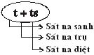

|
Tìm hiểu PHÁP HÀNH THIỀN TUỆ - Tỳ khưu HỘ PHÁP
PHẦN II PHÁP HÀNH (BHĀVANĀ) 4- Trí Tuệ Thiền Tuệ Thứ Tư (Udayabbayañāṇa) Hành giả tiếp tục tiến hành thiền tuệ, trí tuệ thiền tuệ phát triển và tiến hoá tuần tự phát sanh trí tuệ thiền tuệ thứ tư gọi là: Udayabbayañāṇa: Trí tuệ thiền tuệ thấy rõ sự sanh, sự diệt của danh pháp, sắc pháp ngay hiện tại, nên hiện thấy rõ 3 trạng thái chung: trạng thái vô thường, trạng thái khổ, trạng thái vô ngã của danh pháp, sắc pháp. Trí tuệ thiền tuệ thứ tư này phát sanh lên được là do nhờ trí tuệ thứ nhất cho đến trí tuệ thiền tuệ thứ ba làm nhân duyên, làm nền tảng. Trí tuệ thiền tuệ thứ tư này là tổng hợp khả năng của 3 trí tuệ trước: - Trí tuệ thứ nhất thấy rõ, biết rõ thực tánh của mỗi danh pháp, mỗi sắc pháp. - Trí tuệ thứ nhì thấy rõ, biết rõ nhân duyên sanh hay sự sanh của mỗi danh pháp, mỗi sắc pháp. - Trí tuệ thiền tuệ thứ ba thấy rõ, biết rõ sự diệt của danh pháp, sắc pháp do nhân duyên diệt. - Trí tuệ thiền tuệ thứ tư tổng hợp 3 loại trí tuệ trước, có khả năng thấy rõ biết rõ sự sanh, sự diệt của danh pháp, sắc pháp ngay hiện tại, nên hiện thấy rõ 3 trạng thái chung: trạng thái vô thường, trạng thái khổ, trạng thái vô ngã của danh pháp, sắc pháp ngay hiện tại. Trí tuệ thiền tuệ thứ tư có 2 trạng thái đặc biệt: 1- Udaya: Sự sanh, là trạng thái sanh của danh pháp, sắc pháp, do nhân duyên sanh, nên diệt được đoạn kiến (ucchedadiṭṭhi). 2- Vaya: sự diệt, là trạng thái diệt của danh pháp, sắc pháp, do nhân duyên diệt, nên diệt được thuờng kiến (sassatadiṭṭhi). 4.1- Sự sanh, sự diệt của danh pháp, sắc pháp * Sự sanh, sự diệt của danh pháp Danh pháp đó là tâm và tâm sở, mỗi tâm cùng tâm sở có 3 sát na: sát na trụ. 3- Bhaṅgakhaṇa: sát na diệt.  Do đó, sự sanh, sự diệt của mỗi danh pháp vô cùng mau lẹ phi thường. Đức Phật dạy: - Này chư Tỳ khưu, Như Lai không từng thấy pháp nào có sự sanh sự diệt vô cùng mau lẹ như tâm. [28] Trong Chú giải dạy rằng: - "Chỉ một lần búng đầu ngón tay, tâm sanh rồi diệt liên tục 1000 tỷ lần…". [29] * Sự sanh sự diệt của sắc pháp. Mỗi sắc pháp có 4 trạng thái: sắc sanh. 2- Santati: sắc tiếp tục (sắc trụ). 3- Jaratā: sắc già. 4- Aniccatā: sắc diệt. 4 trạng thái của mỗi sắc pháp so sánh với 3 sát na sanh - trụ - diệt của mỗi danh pháp như sau:
Như vậy, Sắc sanh, sắc diệt của mỗi sắc pháp có thời gian 1 sát na giống như danh pháp. Nhưng thời gian trụ của sắc pháp lâu hơn thời gian trụ của danh pháp gấp 16 lần, sát na tâm sanh diệt của danh pháp. Ví dụ: Trong một nhãn môn lộ trình tâm (cakkhudvāravīthicitta) gồm có 17 sát na tâm (sanh-trụ-diệt), bằng 51 sát na nhỏ. Thời gian sanh-trụ-diệt của mỗi danh pháp có 1 sát na sanh, 1 sát na trụ, 1 sát na diệt. Thời gian sanh - trụ - diệt của mỗi sắc pháp tương đương 1 sát na sanh, 1 sát na diệt, giống như danh pháp, nhưng thời gian trụ của sắc pháp có thể trụ được 49 sát na nhỏ so với danh pháp. Do đó, sự sanh, sự diệt của sắc pháp chậm hơn sự sanh, sự diệt của danh pháp. Xét về: 3 trạng thái chung: trạng thái vô thường, trạng thái khổ, trạng thái vô ngã của danh pháp và sắc pháp có kết quả không khác nhau. Hành giả tiến hành thiền tuệ, đến khi trí tuệ thiền tuệ thứ tư này phát sanh thấy rõ, biết rõ sự sanh, sự diệt của danh pháp, sắc pháp do nhân duyên sanh, do nhân duyên diệt, nên hiện thấy rõ, biết rõ 3 trạng thái chung: trạng thái vô thường, trạng thái khổ, trạng thái vô ngã của danh pháp, sắc pháp ngay hiện tại. Sự thật, sanh mạng của mỗi chúng sinh chỉ tồn tại trong một sát na trụ, dầu chư thiên ở cõi trời dục giới hay phạm thiên ở cõi trời sắc giới, vô sắc giới, có tuổi thọ lâu dài đến 84.000 đại kiếp, sanh mạng cũng chỉ tồn tại trong một sát na trụ của tâm mà thôi. Sở dĩ, gọi là đời sống lâu, là nhờ dòng liên tục sanh rồi diệt - diệt rồi sanh, không ngừng của danh pháp và sắc pháp, đặc biệt có sắc mạng chủ liên tục cùng sanh rồi diệt, diệt rồi sanh, nên vẫn duy trì được sanh sanh mạng lâu. - Danh pháp, sắc pháp nào sanh ở quá khứ, thì đã diệt ở quá khứ
rồi, không còn dư sót lại ở hiện tại. - Phần danh pháp sanh rồi diệt liên tục không ngừng từ đời này sang đời khác, từ kiếp quá khứ đến kiếp hiện tại và tiếp tục đến kiếp vị lai, nếu còn tham ái, nhân dẫn dắt tái sanh kiếp sau. - Phần sắc pháp khi cuối cùng mỗi kiếp sống, sắc mạng chủ diệt rồi không sanh; người đời thường gọi là "chúng sinh chết". - Phần danh pháp còn lại liền kết hợp với sắc pháp mới khác cùng sanh do năng lực của nghiệp cho quả, người đời thường gọi là "chúng sinh tái sanh". 4.2- Sự sanh, sự diệt của danh pháp, sắc pháp do nhân duyên Trí tuệ thiền tuệ thứ tư này có khả năng thấy rõ, biết rõ:
1- Nhân duyên sanh của sắc pháp. Trí tuệ thiền tuệ thứ tư này có khả năng thấy rõ, biết rõ sự sanh của sắc pháp, do 5 nhân duyên sanh (samudaya).
Trí tuệ thiền tuệ thứ tư này có khả năng thấy rõ, biết rõ sự sanh của sắc pháp do nhân duyên sanh. Nghĩa là trí tuệ thiền tuệ thứ tư có khả năng thấy rõ, biết rõ quả sanh, là do trí tuệ thiền tuệ thấy rõ, biết rõ nhân duyên sanh. 2- Nhân duyên diệt của sắc pháp. Trí tuệ thiền tuệ thứ tư này có khả năng thấy rõ, biết rõ sự diệt của sắc pháp, do bởi 5 nhân duyên diệt (nirodha).
Trí tuệ thiền tuệ thứ tư này có khả năng thấy rõ, biết rõ sự diệt của sắc pháp, do nhân duyên diệt. Nghĩa là trí tuệ thiền tuệ thứ tư thấy rõ, biết rõ quả diệt, là do trí tuệ thiền tuệ thấy rõ, biết rõ nhân duyên diệt. 3- Nhân duyên sanh của danh pháp. Trí tuệ thiền tuệ thứ tư này có khả năng thấy rõ, biết rõ sự sanh của danh pháp, do 5 nhân duyên sanh.
Trí tuệ thiền tuệ thứ tư này có khả năng thấy rõ, biết rõ sự sanh của danh pháp, do nhân duyên sanh. Nghĩa là trí tuệ thiền tuệ thứ tư biết rõ quả sanh, là do trí tuệ thiền tuệ thấy rõ, biết rõ nhân duyên sanh. 4- Nhân duyên diệt của danh pháp. Trí tuệ thiền tuệ thứ tư này có khả năng thấy rõ, biết rõ sự diệt của danh pháp do 5 nhân duyên diệt.
Trí tuệ thiền tuệ thứ tư này có khả năng thấy rõ, biết rõ sự diệt của danh pháp do nhân duyên diệt. Nghĩa là trí tuệ thiền tuệ thứ tư thấy rõ, biết rõ quả diệt, là do trí tuệ thiền tuệ thấy rõ, biết rõ nhân duyên diệt. 4.3- Sự sanh sự diệt của danh pháp, sắc pháp theo sát na Trí tuệ thiền tuệ thứ tư này có khả năng thấy rõ, biết rõ:
4.4- Tứ đế hiện rõ Trí tuệ thiền tuệ thứ tư này có khả năng thấy rõ, biết rõ sự sanh, sự diệt của danh pháp, sắc pháp ngay hiện tại bằng 2 cách: nhân duyên và sát na. Tứ đế hiện rõ như sau: 1- Khổ đế hiện rõ. Khi trí tuệ thiền tuệ thứ tư này có khả năng thấy rõ, biết rõ sự sanh của danh pháp, sắc pháp theo sát na sanh, thì khổ đế hiện rõ, bởi vì trí tuệ thiền tuệ thấy rõ, biết rõ khổ sanh. Và khi trí tuệ thiền tuệ thứ tư này có khả năng thấy rõ, biết rõ sự diệt của danh pháp, sắc pháp theo sát na diệt, thì khổ đế cũng hiện rõ, bởi vì trí tuệ thiền tuệ thấy rõ, biết rõ khổ chết. 2- Tập đế hiện rõ. Trí tuệ thiền tuệ thứ tư này có khả năng thấy rõ, biết rõ sự sanh của danh pháp, sắc pháp theo nhân duyên sanh, thì tập đế hiện rõ, bởi vì trí tuệ thiền tuệ thấy rõ, biết rõ danh pháp, sắc pháp phát sanh do nhân duyên sanh. 3- Diệt đế hiện rõ. Trí tuệ thiền tuệ thứ tư này có khả năng thấy rõ, biết rõ sự diệt của danh pháp, sắc pháp theo nhân duyên diệt, thì diệt đế hiện rõ, bởi vì trí tuệ thiền tuệ thấy rõ, biết rõ danh pháp, sắc pháp diệt do nhân duyên diệt. 4- Đạo đế hiện rõ. Trí tuệ thiền tuệ thứ tư này có khả năng thấy rõ, biết rõ sự sanh, sự diệt của danh pháp, sắc pháp ngay hiện tại, theo sát na, theo nhân duyên, thì đạo đế hiện rõ, bởi vì trí tuệ thiền tuệ làm 4 phận sự của tứ đế: biết khổ đế, diệt tập đế, chứng ngộ diệt đế, tiến hành đạo đế. Trong tứ đế này, diệt đế và đạo đế vẫn còn là tam giới pháp (lokiyadhamma) vì chưa đạt đến sự chứng ngộ Niết Bàn siêu tam giới pháp, nên chưa gọi là Tứ thánh đế. 4.5- Trạng thái chung hiện rõ 1- Trạng thái vô thường hiện rõ. Trí tuệ thiền tuệ thứ tư này thấy rõ, biết rõ sự sanh, sự diệt của danh pháp, sắc pháp ngay trong hiện tại, do nhân duyên sanh, do nhân duyên diệt, nên trạng thái vô thường hiện rõ. Bởi vì trí tuệ thiền tuệ thấy rõ, biết rõ trạng thái có rồi lại không (hutvā abhāvaṭṭhena). Mỗi danh pháp, mỗi sắc pháp sanh rồi diệt, làm nhân duyên cho danh pháp, sắc pháp khác sanh rồi diệt; sự sanh, sự diệt của danh pháp, sắc pháp liên tục không ngừng trải qua 3 thời: quá khứ, hiện tại và vị lai. 2- Trạng thái khổ hiện rõ. Trí tuệ thiền tuệ thứ tư này thấy rõ, biết rõ sự sanh, sự diệt của danh pháp, sắc pháp ngay trong hiện tại liên tục không ngừng luôn luôn hành hạ, nên có trạng thái khổ (uppādavayapaṭipīlanaṭṭhena dukkhā) hiện rõ. Bởi vì trí tuệ thiền tuệ thấy rõ, biết rõ sự sanh, sự diệt của danh pháp, sắc pháp luôn luôn hành hạ. 3- Trạng thái vô ngã hiện rõ. Trí tuệ thiền tuệ thứ tư này thấy rõ, biết rõ sự sanh, sự diệt của danh pháp, sắc pháp ngay trong hiện tại do nhân duyên sanh, nhân duyên diệt, nên trạng thái vô ngã (avasavattanaṭṭhena anattā) hiện rõ. Bởi vì trí tuệ thiền tuệ thấy rõ, biết rõ danh pháp, sắc pháp phát sanh, do nhân duyên sanh; danh pháp, sắc pháp diệt, do nhân duyên diệt, không chiều theo sự mong muốn của ai cả. Trí tuệ thiền tuệ thứ tư này có khả năng thấy rõ, biết rõ sự sanh, sự diệt của danh pháp, sắc pháp ngay trong hiện tại, nên hiện rõ 3 trạng thái chung: trạng thái vô thường, trạng thái khổ, trạng thái vô ngã của danh pháp, sắc pháp. Cho nên, trí tuệ thiền tuệ thứ tư, mới thật sự chính thức là trí tuệ thiền tuệ đầu tiên. Do đó, trí tuệ thiền tuệ còn non yếu (taruṇavipassanāñāṇa), và đối với hành giả, đây mới thật sự chính thức bắt đầu tiến hành thiền tuệ (āraddhavipassaka). 4.6- Phiền não của thiền tuệ (Vipassanūpakilesa) Hành giả tiến hành thiền tuệ, đến khi phát sanh trí tuệ thiền tuệ thứ tư, thật sự chính thức là trí tuệ thiền tuệ đầu tiên, nên còn non yếu, và đối với hành giả, đây mới thật sự chính thức bắt đầu tiến hành thiền tuệ, nên chưa có đủ kinh nghiệm nhận thức rõ được thế nào là pháp hành chánh đạo, thế nào là pháp hành phi đạo. Do đó, phiền não của thiền tuệ có 10 loại, có thể phát sanh, làm cản trở, làm ngưng trệ việc phát triển trí tuệ thiền tuệ bậc cao hơn, không thể dẫn đến sự chứng ngộ chân lý Tứ thánh đế, chứng đắc 4 Thánh Đạo, 4 Thánh Quả và Niết Bàn. Phiền não của thiền tuệ: là phiền não phát sanh khi đã có trí tuệ thiền tuệ thứ tư phát sanh, vì trí tuệ thiền tuệ này còn non yếu, nên phiền não nương nhờ vào đó mà phát sanh. Phiền não của thiền tuệ có 10 loại: Ánh sáng sanh từ thiền tuệ. 2- Ñāṇa: Trí tuệ của thiền tuệ. 3- Pīti: Hỷ của thiền tuệ. 4- Passaddhi: Tịnh của thiền tuệ. 5- Sukha: Lạc của thiền tuệ. 6- Adhimokkha: Đức tin của thiền tuệ. 7- Paggaha: Tinh tấn của thiền tuệ. 8- Upaṭṭhāna: Niệm của thiền tuệ. 9- Upekkhā: Xả của thiền tuệ. 10- Nikanti: Tâm hài lòng của thiền tuệ. Trong 10 loại phiền não này, có 9 loại kể từ ánh sáng sanh từ thiền tuệ cho đến xả của thiền tuệ gọi là phiền não của thiền tuệ, bởi vì các phiền não này làm ngưng trệ việc phát triển trí tuệ thiền tuệ bậc cao. Cho nên, 9 loại phiền não này không phải là ác pháp mà là thiện pháp. Còn tâm hài lòng của trí tuệ thiền tuệ (nikanti) là phiền não của thiền tuệ, và cũng là nơi nương nhờ phát sanh phiền não, ác pháp. Mười loại phiền não của thiền tuệ này không phát sanh đến những hạng người như: - Bậc Thánh nhân đã nhận thức được pháp hành chánh đạo và pháp hành phi đạo, vì đã từng thực hành đúng theo pháp hành Bát chánh đạo, đã chứng đắc Thánh Đạo, Thánh Quả rồi, nên 10 phiền não của thiền tuệ không thể phát sanh. - Hạng hành giả tiến hành thiền tuệ không đúng theo pháp hành thiền tuệ, nên trí tuệ thiền tuệ không phát sanh, thì 10 phiền não của thiền tuệ cũng không phát sanh. - Hạng hành giả tiến hành theo đúng pháp hành thiền tuệ, nhưng là hành giả lười biếng, bỏ việc tiến hành thiền tuệ, nên 10 pháp hành thiền tuệ không phát sanh. Trong 10 loại phiền não của thiền tuệ này chỉ phát sanh đến hạng hành giả tiến hành thiền tuệ đúng theo Pháp hành Trung đạo, khi phát sanh trí tuệ thiền tuệ thứ tư, còn non yếu, và đối với hành giả đây mới thật sự chính thức bước trên con đường tiến hành thiền tuệ, chưa có đủ kinh nghiệm để phân biệt rõ thế nào là pháp hành chánh đạo, thế nào là pháp hành phi đạo. Cho nên, khi thấy ánh sáng phát sanh từ thiền tuệ,… thì hành giả nghĩ lầm rằng: "Chắc chắn ta đã chứng đắc Thánh Đạo, Thánh Quả rồi!". Hành giả đã chấp lầm, không phải Thánh Đạo cho là Thánh Đạo, không phải Thánh Quả cho là Thánh Quả, phát sanh tâm hài lòng nơi ánh sáng,… từ bỏ đối tượng thiền tuệ danh pháp, sắc pháp, mà trước đây, trí tuệ thiền tuệ thứ tư đã từng thấy rõ, biết rõ sự sanh, sự diệt của danh pháp, sắc pháp; đã từng hiện rõ trạng thái vô thường, trạng thái khổ, trạng thái vô ngã của danh pháp, sắc pháp. Bây giờ không còn thấy rõ nữa, trí tuệ thiền tuệ bị ngưng trệ hoàn toàn. Do đó, 10 loại phiền não này gọi là phiền não của thiền tuệ. Giải thích 10 loại phiền não của thiền tuệ 1- Obhāsa: Ánh sáng của thiền tuệ, hay ánh sáng phát sanh từ thiền tuệ, làm nơi nương nhờ để phát sanh phiền não của thiền tuệ như thế nào? Khi trí tuệ thiền tuệ thứ tư phát sanh thì ánh sáng từ thiền tuệ cũng phát sanh. Hành giả vô cùng ngạc nhiên, vì chưa từng thấy ánh sáng phi thường như thế này bao giờ, bèn nghĩ rằng: "Từ trước đến nay, ánh sáng như thế này chưa từng phát sanh đến với ta, chắc chắn ta đã chứng đắc Thánh Đạo, Thánh Quả thật rồi!". Do đó, khi hành giả có sự chấp lầm nơi ánh sáng ấy: không phải Thánh Đạo chấp là Thánh Đạo; không phải Thánh Quả chấp là Thánh Quả; đã từ bỏ đối tượng thiền tuệ danh pháp, sắc pháp, mà trước đây, trí tuệ thiền tuệ thứ tư đã từng thấy rõ, biết rõ sự sanh, sự diệt của danh pháp, sắc pháp; đã từng hiện rõ trạng thái vô thường, trạng thái khổ, trạng thái vô nga của danh pháp, sắc pháp. Bây giờ không còn thấy rõ nữa, hành giả phát sanh tâm hài lòng nơi ánh sáng, chỉ hướng tâm theo dõi ánh sáng, cho nên làm ngưng trệ việc phát triển trí tuệ thiền tuệ bậc cao. Ánh sáng của thiền tuệ này tỏa ra hẹp, rộng đối với một số hành giả khác nhau.
Ánh sáng này thường phát sanh đến hành giả đã từng chứng đắc các bậc thiền sắc giới trước, về sau tiến hành thiền tuệ, đến khi phát sanh trí tuệ thiền tuệ thứ tư, thì ánh sáng từ thiền tuệ cũng phát sanh, làm nơi nương nhờ để phát sanh phiền não của thiền tuệ. Do đó, phiền não của thiền tuệ này làm ngưng trệ sự phát triển trí tuệ thiền tuệ bậc cao. 2- Ñāṇa: Trí tuệ thiền tuệ, làm nơi nương nhờ để phát sanh phiền não của thiền tuệ như thế nào? Khi trí tuệ thiền tuệ thứ tư phát sanh, thì trí tuệ này cũng phát sanh. Trí tuệ này, thấy rõ, biết rõ vô cùng sâu sắc và bén nhạy, quán xét tất cả danh pháp, sắc pháp một cách mau lẹ phi thường. Hành giả vô cùng ngạc nhiên, bèn nghĩ rằng: "Từ trước đến nay, trí tuệ như thế này chưa từng phát sanh đến với ta, chắc chắn ta đã chứng đắc Thánh Đạo, Thánh Quả thật rồi!". Hành giả chấp lầm nơi trí tuệ ấy: không phải Thánh Đạo chấp là Thánh Đạo; không phải Thánh Quả chấp là Thánh Quả; đã từ bỏ đối tượng thiền tuệ danh pháp, sắc pháp, mà trước đây, trí tuệ thiền tuệ thứ tư đã từng thấy rõ, biết rõ sự sanh, sự diệt của danh pháp, sắc pháp; đã từng hiẹn rõ trạng thái vô thường, trạng thái khổ, trạng thái vô nga của danh pháp, sắc pháp. Bây giờ không còn thấy rõ nữa, hành giả phát sanh tâm hài lòng nơi trí tuệ ấy, chỉ hướng tâm theo dõi trí tuệ ấy mà thôi. Đó là trí tuệ thiền tuệ, làm nơi nương nhờ để phát sanh phiền não của thiền tuệ, làm ngưng trệ việc phát triển trí tuệ thiền tuệ bậc cao. 3- Pīti: Hỷ của thiền tuệ, hỷ tâm sở cùng phát sanh với thiền tuệ, làm nơi nương nhờ để phát sanh phiền não của thiền tuệ như thế nào? Khi trí tuệ thiền tuệ thứ tư phát sanh, thì hỷ tâm sở cũng phát sanh với thiền tuệ. Hỷ có 5 loại : Hỷ chút đỉnh, cảm thấy nổi da gà. 2- Khaṇikāpīti: Hỷ phát sanh từng lúc, từng lúc. 3- Okkantikāpīti: Hỷ có trạng thái làm cho thân lay chuyển, như ngồi trên thuyền sóng gợn nhấp nhô. 4- Ubbegāpīti: Hỷ có trạng thái làm cho thân tâm nhẹ nhàng bay bổng. 5- Pharaṇāpīti: Hỷ có trạng thái tỏa khắp toàn thân, tâm no đủ, an lạc lâu. Khi trí tuệ thiền tuệ thứ tư phát sanh, hỷ có trạng thái tỏa khắp toàn thân, tâm no đủ, an lạc lâu, hành giả vô cùng ngạc nhiên, bèn nghĩ rằng: "Từ trước đến nay, hỷ có trạng thái toả khắp toàn thân, tâm no đủ, an lạc lâu như thế này chưa từng phát sanh đến với ta, chắc chắn ta đã chứng đắc Thánh Đạo, Thánh Quả thật rồi!". Hành giả chấp lầm nơi hỷ ấy: không phải Thánh Đạo chấp là Thánh Đạo; không phải Thánh Quả chấp là Thánh Quả; đã từ bỏ đối tượng thiền tuệ danh pháp, sắc pháp, mà trước đây, trí tuệ thiền tuệ thứ tư đã từng thấy rõ, biết rõ sự sanh, sự diệt của danh pháp, sắc pháp; đã từng hiện rõ trạng thái vô thường, trạng thái khổ, trạng thái vô ngã của danh pháp, sắc pháp. Bây giờ không còn thấy rõ nữa, hành giả phát sanh tâm hài lòng nơi hỷ ấy, chỉ hướng tâm theo dõi hỷ ấy mà thôi. Đó là hỷ của thiền tuệ, làm nơi nương nhờ để phát sanh phiền não của thiền tuệ, làm ngưng trệ việc phát triển trí tuệ thiền tuệ bậc cao. 4- Passaddhi: Tịnh của thiền tuệ, tịnh tâm sở cùng sanh với thiền tuệ làm nơi nương nhờ để phát sanh phiền não của thiền tuệ như thế nào? Khi trí tuệ thiền tuệ thứ tư phát sanh, tịnh tâm sở cùng phát sanh với thiền tuệ, làm cho thân tâm của hành giả vắng lặng yên tịnh, không những làm cho thân tâm vắng lặng yên tịnh, mà còn làm cho thân tâm nhẹ nhàng, nhu nhuyến, uyển chuyển đáng hài lòng ưa thích. Hành giả vô cùng ngạc nhiên, bèn nghĩ rằng: "Từ trước đến nay, trạng thái thân tâm an tịnh như thế này chưa từng phát sanh đến với ta, chắc chắn ta đã chứng đắc Thánh Đạo, Thánh Quả thật rồi !". Hành giả chấp lầm nơi thân tâm an tịnh ấy: không phải Thánh Đạo chấp là Thánh Đạo; không phải Thánh Quả chấp là Thánh Quả; đã từ bỏ đối tượng thiền tuệ danh pháp, sắc pháp, mà trước đây, trí tuệ thiền tuệ thứ tư đã từng thấy rõ, biết rõ sự sanh, sự diệt của danh pháp, sắc pháp; đã từng hiẹn rõ trạng thái vô thường, trạng thái khổ, trạng thái vô ngã của danh pháp, sắc pháp. Bây giờ không còn thấy rõ nữa, hành giả phát sanh tâm hài lòng nơi thân tâm an tịnh ấy, chỉ hướng tâm theo dõi thân tâm an tịnh ấy mà thôi. Đó là tịnh của thiền tuệ, làm nơi nương nhờ để phát sanh phiền não của thiền tuệ, làm ngưng trệ việc phát triển trí tuệ thiền tuệ bậc cao. 5- Sukha: Lạc của thiền tuệ, thọ lạc cùng sanh với thiền tuệ, làm nơi nương nhờ để phát sanh phiền não của thiền tuệ như thế nào? Khi trí tuệ thiền tuệ thứ tư phát sanh, thọ lạc cùng phát sanh với thiền tuệ làm cho thân tâm an lạc tuyệt vời, sự an lạc vô cùng tinh tế. Hành giả vô cùng ngạc nhiên, bèn nghĩ rằng: "Từ trước đến nay, sự an lạc vi tế tuyệt vời như thế này chưa từng phát sanh đến với ta, chắc chắn ta đã chứng đắc Thánh Đạo, Thánh Quả thật rồi !". Hành giả chấp lầm nơi thọ an lạc ấy: không phải Thánh Đạo chấp là Thánh Đạo; không phải Thánh Quả chấp là Thánh Quả; đã từ bỏ đối tượng thiền tuệ danh pháp, sắc pháp, mà trước đây, trí tuệ thiền tuệ thứ tư đã từng thấy rõ, biết rõ sự sanh, sự diệt của danh pháp, sắc pháp; đã từng hiẹn rõ trạng thái vô thường, trạng thái khổ, trạng thái vô ngã của danh pháp, sắc pháp. Bây giờ không còn thấy rõ nữa, hành giả phát sanh tâm hài lòng nơi thọ lạc tuyệt vời ấy, chỉ hướng tâm theo dõi thọ lạc tuyệt vời ấy mà thôi, Đó là lạc của thiền tuệ, làm nơi nương nhờ để phát sanh phiền não của thiền tuệ, làm ngưng trệ việc phát triển trí tuệ thiền tuệ bậc cao. 6- Adhimokkha: Đức tin của thiền tuệ, đức tin tâm sở cùng sanh với thiền tuệ, làm nơi nương nhờ để phát sanh phiền não của thiền tuệ như thế nào? Khi trí tuệ thiền tuệ thứ tư phát sanh, đức tin tâm sở cùng phát sanh với thiền tuệ. Đức tin vô cùng trong sạch, làm cho tâm trong sáng tuyệt vời. Hành giả vô cùng ngạc nhiên, bèn nghĩ rằng: "Từ trước đến nay, đức tin trong sạch làm cho tâm trong sáng tuyệt vời như thế này chưa từng phát sanh đến với ta, chắc chắn ta đã chứng đắc Thánh Đạo, Thánh Quả thật rồi!". Hành giả chấp lầm nơi đức tin trong sáng ấy: không phải Thánh Đạo chấp là Thánh Đạo; không phải Thánh Quả chấp là Thánh Quả; đã từ bỏ đối tượng thiền tuệ danh pháp, sắc pháp, mà trước đây, trí tuệ thiền tuệ thứ tư đã từng thấy rõ, biết rõ sự sanh, sự diệt của danh pháp, sắc pháp; đã từng hiẹn rõ trạng thái vô thường, trạng thái khổ, trạng thái vô ngã của danh pháp, sắc pháp. Bây giờ không còn thấy rõ nữa, hành giả phát sanh tâm hài lòng nơi đức tin trong sáng ấy, chỉ hướng tâm theo dõi đức tin trong sáng ấy mà thôi. Đó là đức tin của thiền tuệ, làm nơi nương nhờ để phát sanh phiền não của thiền tuệ, làm ngưng trệ việc phát triển trí tuệ thiền tuệ bậc cao. 7- Paggāha: Tinh tấn của thiền tuệ, tinh tấn tâm sở cùng sanh với thiền tuệ, làm nơi nương nhờ để phát sanh phiền não của thiền tuệ như thế nào? Khi trí tuệ thiền tuệ thứ tư phát sanh, tinh tấn tâm sở cùng phát sanh với thiền tuệ. Sự tinh tấn đều đặn, không hăng hái quá độ, cũng không lười biếng quá độ, đã gìn giữ và hỗ trợ cho tâm làm tròn mọi phận sự. Hành giả vô cùng ngạc nhiên, bèn nghĩ rằng: "Từ trước đến nay, sự tinh tấn đều đặn như thế này chưa từng phát sanh đến với ta, chắc chắn ta đã chứng đắc Thánh Đạo, Thánh Quả thật rồi!". Hành giả chấp lầm nơi sự tinh tấn đều đặn ấy: không phải Thánh Đạo chấp là Thánh Đạo; không phải Thánh Quả chấp là Thánh Quả; đã từ bỏ đối tượng thiền tuệ danh pháp, sắc pháp, mà trước đây, trí tuệ thiền tuệ thứ tư đã từng thấy rõ, biết rõ sự sanh, sự diệt của danh pháp, sắc pháp; đã từng hiẹn rõ trạng thái vô thường, trạng thái khổ, trạng thái vô ngã của danh pháp, sắc pháp. Bây giờ không còn thấy rõ nữa, hành giả phát sanh tâm hài lòng nơi tinh tấn đều đặn ấy, chỉ hướng tâm theo dõi tinh tấn đều đặn ấy mà thôi. Đó là tinh tấn của thiền tuệ, làm nơi nương nhờ để phát sanh phiền não của thiền tuệ, làm ngưng trệ việc phát triển trí tuệ thiền tuệ bậc cao. 8- Upaṭṭhāna: Niệm của thiền tuệ, niệm tâm sở cùng sanh với thiền tuệ làm nơi nương nhờ để phát sanh phiền não của thiền tuệ như thế nào? Khi trí tuệ thiền tuệ thứ tư phát sanh, niệm tâm sở cùng phát sanh với thiền tuệ. Niệm tâm sở làm phận sự chánh niệm trực nhận các đối tượng thân, thọ, tâm, pháp hay danh pháp, sắc pháp một cách liên tục, khắng khít trong mỗi đối tượng, không hề quên lãng. Hành giả vô cùng ngạc nhiên, bèn nghĩ rằng: "Từ trước đến nay, chánh niệm liên tục vững vàng như thế này chưa từng phát sanh đến với ta, chắc chắn ta đã chứng đắc Thánh Đạo, Thánh Quả thật rồi!". Hành giả chấp lầm nơi chánh niệm ấy: không phải Thánh Đạo chấp là Thánh Đạo; không phải Thánh Quả chấp là Thánh Quả; đã từ bỏ đối tượng thiền tuệ danh pháp, sắc pháp, mà trước đây, trí tuệ thiền tuệ thứ tư đã từng thấy rõ, biết rõ sự sanh, sự diệt của danh pháp, sắc pháp; đã từng hiẹn rõ trạng thái vô thường, trạng thái khổ, trạng thái vô ngã của danh pháp, sắc pháp. Bây giờ không còn thấy rõ nữa, hành giả phát sanh tâm hài lòng nơi chánh niệm ấy, chỉ hướng tâm theo dõi chánh niệm ấy mà thôi, Đó là niệm của thiền tuệ, làm nơi nương nhờ để phát sanh phiền não của thiền tuệ, làm ngưng trệ việc phát triển trí tuệ thiền tuệ bậc cao. 9- Upekkhā: Xả của thiền tuệ, xả cùng phát sanh với thiền tuệ, làm nơi nương nhờ để phát sanh phiền não của thiền tuệ như thế nào? Khi trí tuệ thiền tuệ thứ tư phát sanh, xả cùng phát sanh với thiền tuệ. Xả của thiền tuệ, đó là trí tuệ trung dung trong mọi đối tượng, không thiên về một cực đoan nào, tạo ra một sức mạnh, một năng lực phi thường, vững chắc không có gì làm cho tâm xao động được. Hành giả vô cùng ngạc nhiên, bèn nghĩ rằng: "Từ trước đến nay, trạng thái xả như thế này chưa từng phát sanh đến với ta, chắc chắn ta đã chứng đắc Thánh Đạo, Thánh Quả thật rồi!". Hành giả chấp lầm nơi trạng thái xả ấy: không phải Thánh Đạo chấp là Thánh Đạo; không phải Thánh Quả chấp là Thánh Quả; đã từ bỏ đối tượng thiền tuệ danh pháp, sắc pháp, mà trước đây, trí tuệ thiền tuệ thứ tư đã từng thấy rõ, biết rõ sự sanh, sự diệt của danh pháp, sắc pháp; đã từng hiẹn rõ trạng thái vô thường, trạng thái khổ, trạng thái vô ngã của danh pháp, sắc pháp. Bây giờ không còn thấy rõ nữa, hành giả phát sanh tâm hài lòng nơi xả ấy, chỉ hướng tâm theo dõi xả ấy mà thôi. Đó là xả của thiền tuệ, làm nơi nương nhờ để phát sanh phiền não của thiền tuệ, làm ngưng trệ việc phát triển trí tuệ thiền tuệ bậc cao. 10- Nikanti: Tâm hài lòng trong thiền tuệ, là phiền não của thiền tuệ, làm nơi nương nhờ để phát sanh phiền não của thiền tuệ như thế nào? Khi trí tuệ thiền tuệ thứ tư phát sanh, ánh sáng, trí tuệ, tịnh, lạc,… cùng phát sanh với thiền tuệ. Tâm hài lòng này vô cùng vi tế, có trạng thái vắng lặng, khó có thể nhận thức, khó có thể biết rõ được sự hài lòng này là tham tâm, mà chỉ thấy tâm hài lòng này, là tâm tha thiết trong việc tiến hành thiền tuệ, một cách chu đáo, theo dõi ánh sáng, trí tuệ, hỷ, tịnh, lạc,…. Hành giả vô cùng ngạc nhiên, bèn nghĩ rằng: "Từ trước đến nay, tâm hài lòng tha thiết trong việc tiến hành thiền tuệ một cách chu đáo như thế này, chưa từng phát sanh đến với ta, chắc chắn ta đã chứng đắc Thánh Đạo, Thánh Quả thật rồi!". Hành giả chấp lầm nơi sự hài lòng ấy: không phải Thánh Đạo chấp là Thánh Đạo; không phải Thánh Quả chấp là Thánh Quả; đã từ bỏ đối tượng thiền tuệ danh pháp, sắc pháp, mà trước đây, trí tuệ thiền tuệ thứ tư đã từng thấy rõ, biết rõ sự sanh, sự diệt của danh pháp, sắc pháp; đã từng hiẹn rõ trạng thái vô thường, trạng thái khổ, trạng thái vô ngã của danh pháp, sắc pháp. Bây giờ không còn thấy rõ nữa, hành giả phát sanh tâm hài lòng nơi tâm tha thiết hài lòng ấy, chỉ hướng tâm theo dõi tâm tha thiết hài lòng ấy mà thôi. Đó là tâm hài lòng của thiền tuệ, là phiền não của thiền tuệ, làm nơi nương nhờ để phát sanh phiền não của thiền tuệ, làm ngưng trệ việc phát triển trí tuệ thiền tuệ bậc cao. Ba mươi phiền não của thiền tuệ Hành giả tiến hành thiền tuệ là người không thông hiểu rõ ràng về pháp học. Khi các phiền não của thiền tuệ phát sanh như ánh sáng, trí tuệ,… tâm nghĩ sai lầm, nhận định sai lầm, làm nơi nương nhờ để phát sanh phiền não của thiền tuệ. Do năng lực của tà kiến, ngã mạn, tham ái, cho nên 10 phiền não ấy trở thành 30 phiền não của thiền tuệ. Ví dụ: Khi ánh sáng phát sanh từ thiền tuệ, làm nơi nương nhờ phát sanh phiền não của thiền tuệ, do năng lực của tà kiến, ngã mạn, tham ái như sau: - Nếu chấp lầm rằng: "Ta đã tiến hành thiền tuệ, làm cho phát sanh ánh sáng", như vậy là do năng lực của tà kiến. - Nếu chấp lầm rằng: "Ta đã được ánh sáng đáng tự hào quá!", như vậy là do năng lực của ngã mạn. - Nếu chấp lầm rằng: "Ánh sáng của ta đáng hài lòng quá!", như vậy là do năng lực của tham ái. Tương tự như vậy, 9 phiền não còn lại của thiền tuệ, mỗi phiền não của thiền tuệ, hành giả chấp lầm, do năng lực của tà kiến, ngã mạn, tham ái, trở thành 30 loại phiền não của thiền tuệ, làm ngưng trệ việc phát triển trí tuệ thiền tuệ, không dẫn đến sự chứng ngộ chân lý Tứ thánh đế, chứng đắc 4 Thánh Đạo, 4 Thánh Quả và Niết Bàn. 4.7- Phương pháp diệt phiền não của thiền tuệ Hành giả tiến hành thiền tuệ, đầu tiên cần phải thông thuộc, hiểu rõ về pháp học, nhất là phần lý thuyết về pháp hành thiền tuệ; nên học hỏi, nghiên cứu, tìm hiểu biết rõ bài kinh Đại Tứ niệm xứ (Mahāsatipaṭṭhānasutta), bộ Thanh tịnh đạo (Visuddhimagga),… để làm nền tảng cho pháp hành thiền tuệ. Khi trí tuệ thiền tuệ thấy rõ, biết rõ được sự sanh, sự diệt của danh pháp, sắc pháp rồi, đã hiện rõ trạng thái vô thường, trạng thái khổ, trạng thái vô ngã của danh pháp, sắc pháp; hành giả nên nhận định chắc chắn rằng: "Đó là chánh đạo", đúng là con đường dẫn đến sự chứng ngộ chân lý Tứ thánh đế. Nếu trí tuệ thấy rõ, biết rõ các pháp nào khác, ngoài sự sanh, sự diệt của danh pháp, sắc pháp; ngoài trạng thái vô thường, trạng thái khổ, trạng thái vô ngã của danh pháp, sắc pháp ra, hành giả nên nhận định chắc chắn rằng: "Đó là phi đạo", không phải con đường dẫn đến sự chứng ngộ chân lý Tứ thánh đế. Tiến hành thiền tuệ cốt để chứng ngộ sự thật chân lý khổ đế nơi danh pháp, sắc pháp trong tam giới, để phát sanh tâm nhàm chán nơi danh pháp sắc pháp, để diệt tâm hài lòng nơi danh pháp sắc pháp, không phải để phát sanh tâm hài lòng nơi danh pháp sắc pháp. Thật vậy, trong giáo pháp của Đức Phật chỉ có khổ đế (dukkhasacca) là sự thật chân lý, còn lạc chỉ là hư ảo hão huyền, lạc hư ảo (sukha-vipallāsa), dầu lạc là thọ lạc thuộc về danh pháp cũng có sự sanh, sự diệt; có trạng thái vô thường, trạng thái khổ, trạng thái vô ngã, nên cũng chỉ là khổ đế mà thôi. Khi đã hiểu biết rõ được những điều cơ bản và mục đích của pháp hành thiền tuệ rồi, hành giả tiến hành thiền tuệ có danh pháp sắc pháp làm đối tượng, trí tuệ thiền tuệ thứ tư phát sanh trở lại, thấy rõ biết rõ sự sanh, sự diệt của danh pháp, sắc pháp; thấy rõ biết rõ trạng thái vô thường, trạng thái khổ, trạng thái vô ngã của danh pháp, sắc pháp, dầu có phiền não của thiền tuệ phát sanh như: ánh sáng, trí tuệ, hỷ, tịnh, lạc, đức tin, tinh tấn, niệm, xả, tâm hài lòng phát sanh; thì hành giả có trí tuệ sáng suốt nhận định, phân biệt rõ trong 10 pháp ấy không phải là chánh đạo, chỉ là phi đạo, nên không phát sanh tâm hài lòng nơi những đối tượng ấy; hành giả có trí tuệ sáng suốt nhận định, ý thức rõ rằng: đối tượng danh pháp sắc pháp có sự sanh, sự diệt; có trạng thái vô thường, trạng thái khổ, trạng thái vô ngã này là chánh đạo, dẫn đến sự chứng ngộ chân lý Tứ thánh đế, chứng đắc 4 Thánh Đạo - 4 Thánh Quả và Niết Bàn. Cho nên, sự tiến hành thiền tuệ của hành giả không bị ngưng trệ, trí tuệ thiền tuệ có thể phát triển lên bậc cao hơn. Nếu trường hợp hành giả tự mình không thể ý thức được những phiền não của thiền tuệ, thì hành giả nên tìm đến vị Thiền sư là bậc thông suốt về pháp học, đầy kinh nghiệm về pháp hành thiền tuệ, nhờ vị Thiền sư ấy giảng giải và chỉ dạy phương pháp tháo gỡ những gút mắt quan trọng làm ngăn cản, ngưng trệ việc phát triển trí tuệ thiền tuệ bậc cao. 4.8- Chánh đạo phi đạo tri kiến thanh tịnh (Maggāmaggañāṇadassanavisuddhi). Khi hành giả là người có trí tuệ sáng suốt, nhận thức biết rõ được rằng: "10 hay 30 phiền não của thiền tuệ không phải là chánh đạo, không phải con đường dẫn đến sự chứng ngộ chân lý Tứ thánh đế, đó chỉ là phi đạo mà thôi". Và trí tuệ sáng suốt nhận thức biết rõ rằng: Trí tuệ thiền tuệ thứ tư thấy rõ, biết rõ sự sanh, sự diệt của danh pháp, sắc pháp; thấy rõ trạng thái vô thường, trạng thái khổ, trạng thái vô ngã, đó là chánh đạo, đúng là con đường dẫn đến sự chứng ngộ chân lý Tứ thánh đế, dẫn đến sự chứng đắc 4 Thánh Đạo, 4 Thánh Quả và Niết Bàn. Hành giả tiến hành thiền tuệ từ bỏ phi đạo, tiếp tục hành theo pháp hành chánh đạo, phát sanh trí tuệ thiền tuệ thứ tư Udayabbañāṇa thấy rõ biết rõ sự sanh, sự diệt của danh pháp, sắc pháp; thấy rõ trạng thái vô thường, trạng thái khổ, trạng thái vô ngã của danh pháp, sắc pháp, nên đạt đến thanh tịnh gọi là: Maggāmaggañāṇa-dassanavisuddhi: Chánh đạo, phi đạo tri kiến thanh tịnh, là thanh tịnh thứ 3 của pháp hành thiền tuệ và là thanh tịnh thứ 5 trong 7 pháp thanh tịnh. * Tiraṇapariññā: trí tuệ hiểu biết rõ trạng thái chung: trạng thái vô thường, trạng thái khổ, trạng thái vô ngã của danh pháp sắc pháp, đó là trí tuệ thứ tư gọi là Udayabbayañāṇa. 4.9- Ba gút mắt tiến hành thiền tuệ Hành giả tiến hành thiền tuệ thường gặp phải 3 gút mắt quan trọng là: 1- Gút mắt thứ nhất về pháp học thiền tuệ. Khi hành giả học hỏi, nghiên cứu tìm hiểu về pháp hành thiền tuệ thường gặp gút mắt thứ nhất là__
Nếu hành giả không biết phân biệt rõ được 2 loại danh pháp, sắc pháp này; thì khi tiến hành thiền tuệ dùng đối tượng danh pháp, sắc pháp thuộc về Chế định pháp, thì sự tiến hành thiền tuệ không dẫn đến sự chứng ngộ chân lý Tứ thánh đế. Hành giả tiến hành thiền tuệ phải có đối tượng danh pháp, sắc pháp thuộc về Chân nghĩa pháp, ngay hiện tại, không phải Chế định pháp. Thật ra, Chân nghĩa pháp là sự thật hiển nhiên trong đời, nhưng do vô minh che án thực tánh của chân nghĩa pháp ấy, nên không thấy không biết. Nếu không có Đức Phật hoặc bậc Thánh Thanh Văn đệ tử của Đức Phật chỉ dạy, thì chắc chắn không có một ai tự thấy, tự biết được thực tánh của chân nghĩa pháp ấy. Khi hành giả được học hỏi danh pháp, sắc pháp thuộc về pháp học thiền tuệ rồi, biết phân biệt rõ được danh pháp, sắc pháp thuộc về Chế định pháp và danh pháp sắc pháp thuộc về Chân nghĩa pháp. Như vậy, hành giả đã tháo gỡ được gút mắt quan trọng đầu tiên, khi bước vào con đường tiến hành thiền tuệ, biết sử dụng danh pháp hoặc sắc pháp thuộc về chân nghĩa pháp làm đối tượng thiền tuệ. 2- Gút mắt thứ nhì về pháp hành thiền tuệ. Hành giả sau khi đã học hỏi tìm hiểu biết đúng về pháp học thiền tuệ là một điều khó đầu tiên; đến khi bước sang pháp hành thiền tuệ, bắt đầu tiến hành thiền tuệ, thực nghiệm để thấy rõ, biết rõ đúng về thực tánh của danh pháp, sắc pháp đúng theo chân nghĩa pháp, đó là điều khó thứ nhì. Bởi vì thực tánh của danh pháp, sắc pháp thuộc về chân nghĩa pháp (không phải chế định pháp) luôn luôn bị màn vô minh bao trùm, phủ kín, nên thực tánh của danh pháp, sắc pháp đúng theo chân nghĩa pháp không hiện rõ được. Muốn thấy rõ thực tánh của danh pháp, sắc pháp, hành giả cần phải có yonisomanasikāra: sự hiểu biết trong tâm bằng trí tuệ đúng theo 4 trạng thái của tất cả danh pháp, sắc pháp trong tam giới là: vô thường, khổ, vô ngã, bất tịnh, mới có thể ngăn cản được vô minh và đồng thời ngăn được những điều hư ảo (vippallāsa), để hỗ trợ cho sự phát sanh trí tuệ thứ nhất (Nāmarūpaparicchedañāṇa) thấy rõ, biết rõ, phân biệt rõ thực tánh của mỗi danh pháp, mỗi sắc pháp đúng theo chân nghĩa pháp của chính nó là:
Trí tuệ thứ nhất này đóng vai trò quan trọng trước tiên, làm nền tảng căn bản để cho phát sanh trí tuệ thiền tuệ bậc cao hơn. Như vậy, hành giả đang tiến hành thiền tuệ đã tháo gỡ được gút măt thứ nhì được rồi, chỉ còn gút mắt cuối cùng. 3- Gút mắt thứ ba, ở giai đoạn trí tuệ thiền tuệ thứ tư. Hành giả tiến hành thiền tuệ phát sanh từ trí tuệ thứ nhất cho đến trí tuệ thiền tuệ thứ tư; lần đầu tiên, trí tuệ thiền tuệ thứ tư thấy rõ, biết rõ được sự sanh, sự diệt của danh pháp, sắc pháp ngay hiện tại; thấy rõ, biết rõ trạng thái vô thường, trạng thái khổ, trạng thái vô ngã của danh pháp, sắc pháp. Song trí tuệ thiền tuệ thứ tư này còn non yếu (taruṇavipassanāñāṇa). Vả lại, hành giả cũng là người mới bước vào lãnh vực trí tuệ thiền tuệ đầu tiên nên chưa có kinh nghiệm. Do đó, trí tuệ thiền tuệ thứ tư này là nơi nương nhờ để phát sanh 10 loại phiền não của thiền tuệ, mà đối với hành giả chưa từng thấy, chưa từng biết bao giờ, nên có sự thấy sai, chấp lầm từ nơi phiền não của thiền tuệ ấy cho rằng: "chắc chắn ta đã chứng đắc Thánh Đạo, Thánh Quả thật rồi!". Sự thật "Không phải Thánh Đạo chấp là Thánh Đạo, không phải Thánh Quả chấp là Thánh Quả". Chính phiền não của thiền tuệ này là gút mắt làm ngưng trệ việc phát triển trí tuệ thiền tuệ bậc cao hơn. Trong trường hợp này, hành giả là người có trí tuệ sáng suốt, nhận thức biết rõ được rằng: "10 loại phiền não của thiền tuệ không phải là chánh đạo, không phải con đường dẫn đến sự chứng ngộ chân lý Tứ thánh đế, đó chỉ là phi đạo mà thôi". Và trí tuệ sáng suốt nhận thức biết rõ rằng: "Trí tuệ thiền tuệ thứ tư" đã thấy rõ, biết rõ sự sanh, sự diệt của danh pháp, sắc pháp, thấy rõ trạng thái vô thường, trạng thái khổ, trạng thái vô ngã, đó mới thật là chánh đạo, đúng là con đường dẫn đến sự chứng ngộ chân lý Tứ thánh đế, dẫn đến sự chứng đắc 4 Thánh Đạo, 4 Thánh Quả và Niết Bàn. Hành giả bỏ phi đạo, tiếp tục theo pháp hành chánh đạo, trí tuệ thiền tuệ được phát triển trở lại. Như vậy, hành giả tiến hành thiền tuệ đến giai đoạn tháo gỡ được gút mắt phiền não của thiền tuệ cuối cùng rồi, hành giả trở lại tiếp tục pháp hành chánh đạo, là tiến hành thiền tuệ, đến khi trí tuệ thiền tuệ thứ tư phát sanh trở lại, thấy rõ, biết rõ sự sanh, sự diệt của danh pháp, sắc pháp, thấy rõ trạng thái vô thường, trạng thái khổ, trạng thái vô ngã của danh pháp, sắc pháp và phát triển trí tuệ thiền tuệ đến bậc cao. 4.10- Pháp hành tri kiến thanh tịnh (Paṭipadāñāṇadassanavisuddhi) Hành giả tiến hành thiền tuệ một lần nữa, Trí tuệ thiền tuệ thứ tư Udayabbayānupassanāñāṇa phát sanh thấy rõ, biết rõ sự sanh, sự diệt của danh pháp, sắc pháp; thấy rõ trạng thái vô thường, trạng thái khổ, trạng thái vô ngã của danh pháp, sắc pháp; sau khi không còn bị phiền não của thiền tuệ làm ngưng trệ nữa; tiến hành đúng theo pháp hành chánh đạo, đó là Pháp hành Trung đạo. Trí tuệ thiền tuệ thứ tư lại tiếp tục thấy rõ, biết rõ sự sanh, sự diệt của danh pháp, sắc pháp; lại thấy rõ trạng thái vô thường, trạng thái khổ, trạng thái vô ngã của danh pháp, sắc pháp một cách liên tục, làm cho trí tuệ thiền tuệ thứ tư tăng trưởng, có nhiều năng lực, sắc bén và mau lẹ, thấy rõ, biết rõ sự sanh, sự diệt của danh pháp, sắc pháp càng mau lẹ hơn. Khi ấy trí tuệ thiền tuệ thứ tư không chú tâm đến sự sanh, của danh pháp, sắc pháp; mà đặc biệt chú tâm đến sự diệt của danh pháp, sắc pháp, để làm nền tảng, làm nhân để phát sanh trí tuệ thiền tuệ thứ năm. Trí tuệ thiền tuệ thứ tư Udayabbayānupassanāñāṇa khi thoát khỏi phiền não của thiền tuệ (uppakilesavimutta) đạt đến thanh tịnh gọi là Paṭipadāñāṇadassanavisuddhi: Pháp hành tri kiến thanh tịnh, là thanh tịnh thứ 4 của pháp hành thiền tuệ và là thanh tịnh thứ 6 trong 7 pháp thanh tịnh. Trí tuệ thiền tuệ thứ 4 làm nhân duyên phát sanh trí tuệ thiền tuệ thứ 5. 5- Trí Tuệ Thiền Tuệ Thứ Năm (Bhaṅgānupassanāñāṇa) Hành giả tiếp tục tiến hành thiền tuệ, trí tuệ thiền tuệ phát triển và tiến hóa tuần tự phát sanh trí tuệ thiền tuệ thứ năm, gọi là Bhaṅgānupassanāñāṇa: Trí tuệ thiền tuệ đặc biệt thấy rõ, biết rõ sự diệt của danh pháp, sắc pháp. Trí tuệ thiền tuệ thứ năm này phát sanh lên được là do nhờ trí tuệ thứ nhất cho đến trí tuệ thiền tuệ thứ tư, làm nhân duyên, làm nền tảng. Trí tuệ thiền tuệ thứ năm có nhiều năng lực không chú tâm đến sự sanh của danh pháp, sắc pháp, mà chỉ đặc biệt chú tâm đến sự diệt của danh pháp, sắc pháp. Sự diệt của danh pháp, sắc pháp như thế nào? Trí tuệ thiền tuệ thứ năm này không những thấy rõ, biết rõ sự diệt của đối tượng danh pháp, sắc pháp, mà còn thấy rõ sự diệt của chủ thể, danh biết đối tượng, bằng trí tuệ thiền tuệ. 1- Trí tuệ thiền tuệ có 7 cách (anupassanā). Hành giả tiến hành thiền tuệ, trí tuệ thiền tuệ theo dõi thấy rõ, biết rõ bằng 7 cách: 1- Aniccānupassanā: Trí tuệ thiền tuệ theo dõi thấy rõ, biết rõ danh pháp, sắc pháp có trạng thái vô thường, nên diệt được tâm lầm tưởng cho là thường (niccasaññā). 2- Dukkhānupassanā: Trí tuệ thiền tuệ theo dõi thấy rõ, biết rõ danh pháp, sắc pháp có trạng thái khổ, nên diệt được tâm lầm tưởng cho là lạc (sukhasaññā). 3- Anattānupassanā: Trí tuệ thiền tuệ theo dõi thấy rõ, biết rõ danh pháp, sắc pháp có trạng thái vô ngã, nên diệt được tâm lầm tưởng cho là ngã (attasaññā). 4- Nibbidānupassanā: Trí tuệ thiền tuệ theo dõi thấy rõ, biết rõ danh pháp, sắc pháp đáng nhàm chán, nên diệt được tham tâm hài lòng trong danh pháp, sắc pháp (nandi). 5- Virāgānupassanā: Trí tuệ thiền tuệ theo dõi thấy rõ, biết rõ danh pháp, sắc pháp không đáng say mê, nên diệt được tham tâm say mê trong danh pháp, sắc pháp (rāga). 6- Nirodhānupassanā: Trí tuệ thiền tuệ theo dõi thấy rõ, biết rõ sự diệt của danh pháp, sắc pháp, nên diệt được sự sanh của tham ái (samudaya). 7- Paṭinissaggānupassanā: Trí tuệ thiền tuệ theo dõi thấy rõ, biết rõ danh pháp, sắc pháp đáng xả bỏ, nên diệt được tâm chấp thủ nơi danh pháp, sắc pháp (ādāna). Đó là 7 cách tiến hành thiền tuệ, trí tuệ thiền tuệ có sự liên quan với nhau như sau: - Trí tuệ thiền tuệ thứ năm thấy rõ, biết rõ đặc biệt sự diệt của danh pháp, sắc pháp, nên cũng thấy rõ, biết rõ danh pháp, sắc pháp có trạng thái vô thường, trạng thái khổ, trạng thái vô ngã. - Danh pháp, sắc pháp nào có trạng thái vô thường, trạng thái khổ, trạng thái vô ngã, thì danh pháp, sắc pháp ấy đáng nhàm chán. - Danh pháp, sắc pháp nào đáng nhàm chán, thì danh pháp, sắc pháp ấy không đáng say mê. - Danh pháp, sắc pháp nào không đáng say mê, thì danh pháp, sắc pháp ấy đáng diệt bỏ. - Danh pháp, sắc pháp nào đáng diệt bỏ, thì danh pháp, sắc pháp ấy đáng xả bỏ, không nên chấp thủ. Trí tuệ thiền tuệ thứ năm thấy rõ tội lỗi của danh pháp, sắc pháp, là khổ đế và hiểu rõ ân đức của Niết Bàn, pháp giải thoát khổ, nên hướng tâm đến sự chứng ngộ Niết Bàn. 2- 18 loại đại trí tuệ thiền tuệ (mahāvipassanā).[30] Hành giả tiến hành thiền tuệ, khi phát sanh trí tuệ thiền tuệ thấy rõ, biết rõ danh pháp, sắc pháp một cách rõ ràng, thuần thục rồi có thể phát sanh 18 loại đại trí tuệ thiền tuệ như sau: 1- Aniccānupassanā: Trí tuệ thiền tuệ theo dõi thấy rõ, biết rõ danh pháp, sắc pháp có trạng thái vô thường, nên diệt được tâm lầm tưởng cho là thường (niccasaññā). 2- Dukkhānupassanā: Trí tuệ thiền tuệ theo dõi thấy rõ, biết rõ danh pháp, sắc pháp có trạng thái khổ, nên diệt được tâm lầm tưởng cho là lạc (sukhasaññā). 3- Anattānupassanā: Trí tuệ thiền tuệ theo dõi thấy rõ, biết rõ danh pháp, sắc pháp có trạng thái vô ngã, nên diệt được tâm lầm tưởng cho là ngã (attasaññā). 4- Nibbidānupassanā: Trí tuệ thiền tuệ theo dõi thấy rõ, biết rõ danh pháp, sắc pháp đáng nhàm chán, nên diệt được tham tâm hài lòng trong danh pháp, sắc pháp (nandi). 5- Virāgānupassanā: Trí tuệ thiền tuệ theo dõi thấy rõ, biết rõ danh pháp, sắc pháp không đáng say mê, nên diệt được tham tâm say mê trong danh pháp, sắc pháp (rāga). 6- Nirodhānupassanā: Trí tuệ thiền tuệ theo dõi thấy rõ, biết rõ sự diệt của danh pháp, sắc pháp, nên diệt được sự sanh của tham ái (samudaya). 7- Paṭinissaggānupassanā: Trí tuệ thiền tuệ theo dõi thấy rõ, biết rõ danh pháp, sắc pháp đáng xả bỏ, nên diệt được sự chấp thủ nơi danh pháp, sắc pháp (ādāna). 8- Khayānupassanā: Trí tuệ thiền tuệ theo dõi thấy rõ, biết rõ sự tận diệt của danh pháp, sắc pháp, nên diệt được tâm lầm tưởng cho là ngã tưởng đồng nhất (ghanasaññā). 9- Vayānupassanā: Trí tuệ thiền tuệ theo dõi thấy rõ, biết rõ sự hoại diệt của danh pháp, sắc pháp, nên diệt được tham tâm tích luỹ (āyūhana). 10- Vipariṇāmānupassanā: Trí tuệ thiền tuệ theo dõi thấy rõ, biết rõ sự biến đổi của danh pháp, sắc pháp, nên diệt được tâm lầm tưởng cho là bền vững lâu dài (dhuvasaññā). 11- Animittānupassanā: Trí tuệ thiền tuệ theo dõi thấy rõ, biết rõ danh pháp, sắc pháp không hiện tượng, nên diệt được chấp thủ hiện tượng danh pháp, sắc pháp (nimitta). 12- Appaṇihitānupassanā: Trí tuệ thiền tuệ theo dõi thấy rõ, biết rõ danh pháp, sắc pháp, không đáng tham muốn, nên diệt được tâm tham muốn (paṇidhi). 13- Suññatānupassanā: Trí tuệ thiền tuệ theo dõi thấy rõ, biết rõ danh pháp, sắc pháp không phải ta, không phải của ta, nên diệt được tà kiến theo chấp ngã (abhinivesa). 14- Adhipaññādhammavipassanā: Trí tuệ thiền tuệ siêu việt thấy rõ, biết rõ danh pháp, sắc pháp rõ ràng vô dụng, nên diệt được tâm chấp thủ cho là lợi ích (sārādānābhinivesa). 15- Yathābhūtañāṇadassanā: Trí tuệ thiền tuệ tri kiến nơi danh pháp, sắc pháp đúng như thật chân lý, nên diệt được chấp thủ bởi si mê (sammohābhinivesa). 16- Ādīnavānupassanā: Trí tuệ thiền tuệ theo dõi thấy rõ, biết rõ tội lỗi của danh pháp, sắc pháp, nên diệt được tâm chấp thủ do tham ái quyến luyến (ālayābhinivesa). 17- Paṭisaṅkhānupassanā: Trí tuệ thiền tuệ theo dõi quán xét con đường giải thoát khổ, nên diệt được tâm không muốn tìm con đường giải thoát khổ (appaṭisaṅkhā). 18- Vivaṭṭānupassanā: Trí tuệ thiền tuệ theo dõi thấy rõ, biết rõ Niết Bàn, pháp giải thoát khổ luân hồi, nên diệt được tâm chấp thủ do ràng buộc (samyogābhinivesa). Đó là 18 đại trí tuệ thiền tuệ phát sanh tùy căn duyên của hành giả. Nhưng trong 18 đại trí tuệ thiền tuệ này, chung quy chỉ có 3 đại trí tuệ thiền tuệ căn bản chính là: 1- Aniccānupassanā: Trí tuệ thiền tuệ theo dõi thấy rõ, biết rõ danh pháp, sắc pháp có trạng thái vô thường. 2- Dukkhānupassanā: Trí tuệ thiền tuệ theo dõi thấy rõ, biết rõ danh pháp, sắc pháp có trạng thái khổ. 3- Anattānupassanā: Trí tuệ thiền tuệ theo dõi thấy rõ, biết rõ danh pháp, sắc pháp có trạng thái vô ngã. Còn lại 15 đại trí tuệ thiền tuệ khác có thể sát nhập vào trong 3 loại đại trí tuệ căn bản chính này tùy theo trạng thái gần giống nhau như sau: - Aniccānupassanā: Có 5 đại trí tuệ thiền tuệ có trạng thái gần giống nhau được sát nhập vào như: animittānupassanā, nirodhānu-passanā, khayānupassanā, vayānupassanā, vipariṇāmānu-passanā. - Dukkhānupassanā: Có 4 đại trí tuệ thiền tuệ có trạng thái gần giống nhau được sát nhập vào như: Appaṇihitānupassanā, nibbidānupassanā, virāgānupassanā, ādīnavānupassanā. - Anattānupassanā: Có 4 đại trí tuệ thiền tuệ có trạng thái gần giống nhau được sát nhập vào như: suññatānupassanā, paṭinis-saggānupassanā, paṭisaṅkhānupassanā, vivatṭānupassanā. - Adhipaññādhammavipassanā: có thể sát nhập vào tất cả mọi đại trí tuệ thiền tuệ. - Yathābhūtañāṇadassana: thuộc về kaṅkhāvitaraṇa-visuddhi. Nếu hành giả tiến hành thiền tuệ, có 3 loại đại trí tuệ thiền tuệ căn bản chính thuần thục rồi, còn các loại đại trí tuệ thiền tuệ phụ khác tùy căn duyên mà phát sanh. Ba loại đại trí tuệ thiền tuệ này gọi là căn bản chính, là vì có khả năng dẫn đến sự chứng ngộ Niết Bàn riêng biệt. - Đại trí tuệ thiền tuệ theo dõi thấy rõ, biết rõ danh pháp, sắc pháp có trạng thái vô thường, có thể dẫn đến sự chứng ngộ Vô Hiện Tượng Niết Bàn (Animittanibbāna). - Đại trí tuệ thiền tuệ theo dõi thấy rõ, biết rõ danh pháp, sắc pháp có trạng thái khổ, có thể dẫn đến sự chứng ngộ Vô Ái Niết Bàn (Appaṇihitanibbāna). - Đại trí tuệ thiền tuệ theo dõi thấy rõ, biết rõ danh pháp, sắc pháp có trạng thái vô ngã, có thể dẫn đến sự chứng ngộ Chơn Không Niết Bàn (Suññatanibbāna). 3- Quả báu của trí tuệ thiền tuệ thứ năm. Hành giả tiến hành thiền tuệ, có khả năng đạt đến trí tuệ thiền tuệ thứ năm gọi là Bhaṅgānupassanāñāṇa: Trí tuệ thiền tuệ theo dõi thấy rõ, biết rõ đặc biệt sự diệt của danh pháp, sắc pháp, hành giả có được 8 quả báu như sau:
Trong Chú giải có dạy rằng : "Khi bậc Thiện trí có trí tuệ thiền tuệ thấy rõ, biết rõ danh pháp, sắc pháp bị hoại diệt thường thường; khi biết rõ được 8 quả báu cao quý của trí tuệ thiền tuệ này, nên kiên trì tiến hành thiền tuệ không thối chuyển, với ý nguyện mong chứng ngộ Niết Bàn, pháp giải thoát khổ, cũng ví như người bị cháy tóc hay khăn quấn trên đầu, chỉ quyết tâm dập tắt lửa mà thôi". Trí tuệ thiền tuệ thứ 5 làm nhân duyên phát sanh trí tuệ thiền tuệ thứ 6. Chú thích: [28] Bộ Anguttaranikāya. [29] Chú giải Samyuttanikāya, Khandhavagga, kinh Pheṇapiṇḍasutta. [30] Bộ Visuddhimagga, phần Pariññādippabhedakathā . -ooOoo- Ðầu trang
| Mục lục
| 1.1
| 1.2
| 1.3
| 1.4
| 1.5
| 2.1
| 2.2
| 2.3
| 2.4
| 2.5
| 3.1
| 3.2
| 3.3
| 3.4
| 3.5
| |
Chân thành cám ơn Tỳ khưu Hộ Pháp đã gửi tặng bản vi tính (Bình Anson, 05-2003).
[Trở
về trang Thư Mục]
last updated: 30-05-2003